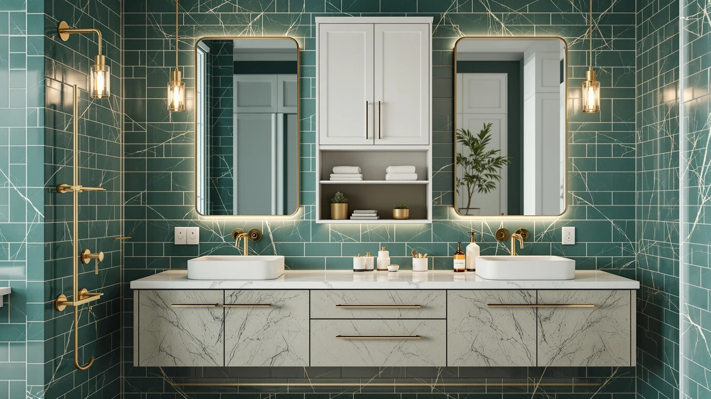

Grusign Storage Cabinet Review (2026): Worth It?
Prices and picks verified as of November 2026. Independent, reader-supported reviews.


Quick Answer
The GRUSIGN Storage Cabinet Modern Bathroom is a metal and wood floor cabinet built around three drawers and one door, giving you mixed storage for small items and bulkier bathroom supplies in one footprint. At $79.99, it costs exactly the same as the VASAGLE and Homhedy alternatives covered below, so the decision comes down to drawer-and-door layout rather than price.
Our pick: GRUSIGN Storage Cabinet Modern Bathroom, $79.99 Check Price on Amazon
Bottom line: our top pick is the GRUSIGN Storage Cabinet at $79.99.
Things to Know Before You Buy
- The GRUSIGN Storage Cabinet Modern Bathroom pairs three drawers with one door on a metal and wood frame, a layout built for sorting small items in the drawers while hiding bulkier supplies behind the door, similar to the layouts covered in our full cabinet roundup.
- At $79.99, it costs exactly the same as the VASAGLE Tall Bathroom Cabinet Narrow, the VASAGLE Bathroom Floor Storage Cabinet, and the Homhedy Farmhouse Bathroom Storage Cabinet covered later as alternatives, so price alone will not settle the decision.
- A metal and wood build sits between the all-metal cabinets and the all-wood cabinets we cover elsewhere on the site. See our material comparison guide for how that trade-off plays out over time.
- Three drawers give you more small-item sorting than most single-door cabinets in this price range, though you give up some of the deep shelf space a pure cabinet design offers.
- This specific listing doesn't have any verified owner reviews yet, so treat the manufacturer's material and configuration claims as spec-sheet facts rather than a track record.
This Grusign Storage Cabinet Review looks at whether a $79.99 metal and wood cabinet with three drawers and one door can compete with VASAGLE and Homhedy's take on the same footprint. Bathroom storage rarely gets more floor space to work with, so a cabinet has to make the most of mixed drawer-and-door storage instead of offering one big open shelf. The GRUSIGN splits the difference, giving you three drawers for small items and a single door for towels or cleaning supplies, all on a metal and wood frame. We compared its configuration and price against three competing cabinets to see where the GRUSIGN earns its spot in an oddly uniform price bracket.
The GRUSIGN Storage Cabinet Modern Bathroom competes directly with the VASAGLE Tall Bathroom Cabinet Narrow, the VASAGLE Bathroom Floor Storage Cabinet, and the Homhedy Farmhouse Bathroom Storage Cabinet, all covered later as alternatives in this comparison. Each one lands at the exact same $79.99 price point, so the decision rests on configuration and style rather than budget. The three-drawer, one-door layout and metal and wood build tell us where the GRUSIGN likely wins, and where a narrower or farmhouse-styled alternative might fit your bathroom better.
Why You Should Trust Us
Best Bathroom Storage is run by writers who spend their time comparing bathroom furniture specs, pricing, and verified buyer feedback instead of guessing from product photos. Ilane Tall, our home and bath expert, has covered dozens of storage cabinets and vanity organizers for this site, and she tracks how a listed configuration like three drawers and one door holds up against buyer feedback once a listing has history behind it. For this Grusign Storage Cabinet Review, we checked the GRUSIGN's listed price, material, and configuration against the VASAGLE and Homhedy alternatives rather than taking the product photos at face value. We do not run a fake testing lab, and we do not claim to have installed this cabinet ourselves. Instead, we dig through verified listings and compare specs line by line to catch when a description overstates what a product can realistically deliver.
Our Research Experience
We did not install the GRUSIGN Storage Cabinet Modern Bathroom in a bathroom ourselves. Instead, we compared its listed price, material, and three-drawer, one-door configuration against the VASAGLE Tall Bathroom Cabinet Narrow, the VASAGLE Bathroom Floor Storage Cabinet, and the Homhedy Farmhouse Bathroom Storage Cabinet, three cabinets that land at the identical $79.99 price point. Since this specific GRUSIGN listing doesn't have verified owner reviews yet, we weighed what the manufacturer's own description claims about the metal and wood frame against the configuration and finish of the three alternatives. That comparison is the backbone of this Grusign Storage Cabinet Review: a side-by-side read of what each listing promises, not a lived-in test of any single unit.
Overview & Specs

GRUSIGN Storage Cabinet Modern Bathroom
What we like
- Three drawers separate small items from the single door's bulkier storage, a split not every cabinet in this price range offers
- Metal and wood build mixes a sturdier frame with a warmer wood-toned finish
- Priced at $79.99, the same as every alternative in this comparison, so you are not paying extra for the mixed-storage layout
Flaws but not dealbreakers
- No verified owner reviews are available yet to confirm how the drawers and door hold up over time
- A three-drawer, one-door split means less open shelf space than a cabinet built around two or three large doors
- The listing does not list full dimensions beyond the drawer-and-door configuration, so measure your space carefully before buying
| Material | Metal / wood |
| Size | Three Drawers&One Door |
The GRUSIGN Storage Cabinet Modern Bathroom is built around a metal and wood frame with three drawers stacked above a single door, a configuration that favors sorting small items like cosmetics or medicine over housing one large stash of towels. That three-drawer, one-door split sets it apart from the VASAGLE and Homhedy alternatives covered later, which lean more toward open shelving or a single wide door.
At $79.99, the GRUSIGN costs exactly the same as the three alternatives in this Grusign Storage Cabinet Review, so the decision comes down to whether you want drawer-based sorting or a different door-and-shelf layout. The metal and wood build gives it a sturdier frame than an all-particleboard cabinet, though without a verified owner review history yet, that durability claim still comes from the manufacturer alone.
What We Liked
The three-drawer, one-door configuration is the clearest strength in this Grusign Storage Cabinet Review. Most bathroom cabinets in this price bracket commit to either open shelving or a single door, but the GRUSIGN splits the difference, giving you dedicated drawers for small items like cosmetics or medicine alongside a door for bulkier supplies such as spare towels or cleaning products. The metal and wood build also stands out, since pairing a metal frame with wood-toned panels gives the cabinet more structural backbone than an all-particleboard alternative, at least on paper. Pricing is the other point in its favor. At $79.99, it matches every alternative in this comparison, so you get the mixed-storage layout without paying a premium for it.
What Could Be Better
The biggest gap in this Grusign Storage Cabinet Review is the lack of verified owner feedback. Since this specific listing doesn't have owner reviews yet, the metal and wood build's durability claims come from the manufacturer alone, and there is no track record to confirm how the drawers glide after months of daily use. The three-drawer, one-door split also means less total shelf space than a cabinet built around two or three full-width doors, so anyone storing larger items like a stack of bath towels may find the single door section cramped.
The listing is also light on full dimensions beyond the drawer-and-door count, which makes it harder to confirm the cabinet will clear your bathroom's available footprint before you buy. Anyone comparing it against a cabinet with published dimensions should treat that gap as a reason to measure twice rather than a reason to rule the GRUSIGN out.
Who Is It For?
The GRUSIGN Storage Cabinet Modern Bathroom fits a household that wants to sort small bathroom items into dedicated drawers instead of piling them on an open shelf. Its three drawers suit cosmetics, medicine, and other small essentials, while the single door below handles bulkier supplies like extra towels or cleaning products. It is not the right pick if you need maximum shelf space for a large stash of towels. In that case, the wider VASAGLE Bathroom Floor Storage Cabinet covered below makes better use of the same $79.99 price.
Anyone who has struggled with small items sliding around on open bathroom shelves will likely appreciate the drawer-based sorting here. A household that prioritizes vertical storage over drawers, on the other hand, will find the VASAGLE Tall Bathroom Cabinet Narrow a better match for the same budget. And a buyer drawn to a farmhouse look rather than the GRUSIGN's modern metal and wood finish should look at the Homhedy alternative instead.
Alternatives to Consider
If the GRUSIGN's three-drawer, one-door layout does not match what your bathroom needs, these three alternatives cover the most common trade-offs: a narrow tall tower from VASAGLE, a wider floor cabinet also from VASAGLE, and a farmhouse-styled cabinet from Homhedy. All three land at the same $79.99 price, so compare them on configuration rather than cost, and check our small bathroom cabinet picks if floor space is tight.

Also Great
VASAGLE Tall Bathroom Cabinet Narrow
A narrow, tall VASAGLE tower that favors vertical storage over the GRUSIGN's drawer-based sorting, a better fit if floor space is tighter than cabinet height.
$79.99
Check Price on Amazon
Also Great
VASAGLE Bathroom Floor Storage Cabinet
A wider VASAGLE floor cabinet built for more open shelf space than the GRUSIGN's three-drawer layout, worth considering if you need to store larger items like folded towels.
$79.99
Check Price on Amazon
Also Great
Homhedy Farmhouse Bathroom Storage Cabinet
A farmhouse-styled Homhedy cabinet that trades the GRUSIGN's metal-and-wood look for a more rustic finish, a straightforward swap if style matters as much as configuration.
$79.99
Check Price on AmazonFrequently Asked Questions
Is the GRUSIGN Storage Cabinet sturdy enough for daily use?
The manufacturer lists a metal and wood frame for the GRUSIGN Storage Cabinet, which should hold up to the three drawers and single door's daily use better than an all-particleboard cabinet. There is no verified owner feedback yet on this specific listing, so treat that durability claim as a manufacturer spec until a track record builds up.
How does the GRUSIGN compare to the VASAGLE alternatives?
The VASAGLE Tall Bathroom Cabinet Narrow trades the GRUSIGN's three drawers for a taller, narrower footprint, and the VASAGLE Bathroom Floor Storage Cabinet trades them for wider open shelving. Choose the GRUSIGN if drawer-based sorting matters more to you than extra height or shelf width.
Do the GRUSIGN, VASAGLE, and Homhedy cabinets all cost the same?
Yes. All four cabinets in this Grusign Storage Cabinet Review, the GRUSIGN, both VASAGLE options, and the Homhedy Farmhouse Bathroom Storage Cabinet, are priced at $79.99, so the choice comes down to configuration and style rather than budget.
Final Verdict
This Grusign Storage Cabinet Review comes down to a straightforward trade-off: a three-drawer, one-door cabinet with mixed storage against three alternatives that trade some of that drawer space for extra height, width, or a different style. For a bathroom that needs small-item sorting alongside a single door for bulkier supplies, the GRUSIGN is the practical pick, and its metal and wood build gives it a sturdier frame than an all-particleboard cabinet at the same price. If your bathroom has more floor space than drawer-sorting needs, the VASAGLE or Homhedy alternatives covered above make better use of it. Either way, GRUSIGN is the brand worth starting with if mixed drawer-and-door storage is your main requirement.